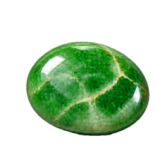
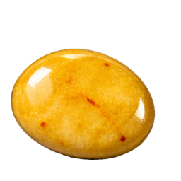
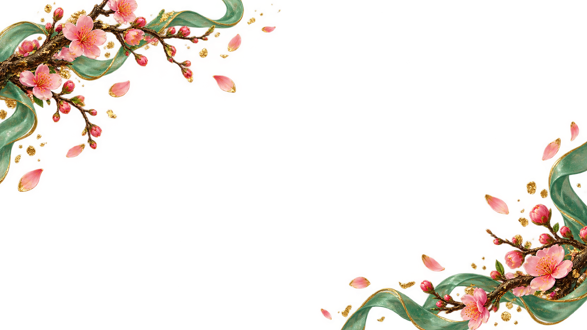

Vì sao Ô Ăn Quan là trò chơi tuổi thơ đáng nhớ?
Chỉ cần vài viên sỏi và những ô vẽ trên nền đất, hai người đã có thể cùng chơi. Mỗi lượt đều cần quan sát, tính hướng rải và đoán nước đi tiếp theo nên luật dễ hiểu nhưng ván đấu luôn có chiều sâu.

00
00
Trò chơi dân gian
Rải khéo, chập chuẩn, ăn trọn hai Quan.
Chọn “Bắt đầu” để chơi.
Bàn có 10 ô dân, mỗi ô 5 dân, và 2 ô Quan ở hai đầu. Chọn một ô bên mình rồi rải từng quân theo một trong hai hướng.
Khi rải hết, nếu ô kế tiếp có dân thì bốc lên rải tiếp. Nếu ô kế tiếp trống và ô sau có quân thì ăn toàn bộ quân ở ô đó. Ván kết thúc khi hai ô Quan đều trống.
Trò chơi tuổi thơ của người Việt
Ô Ăn Quan là trò chơi dân gian quen thuộc, gắn với sân trường, hiên nhà và những buổi tụ họp bạn bè. Phiên bản trên Sắp Tết giữ cách rải dân, ăn quân và tính điểm truyền thống, đồng thời giúp bạn bắt đầu một ván mới ngay trên trình duyệt.
Chỉ cần vài viên sỏi và những ô vẽ trên nền đất, hai người đã có thể cùng chơi. Mỗi lượt đều cần quan sát, tính hướng rải và đoán nước đi tiếp theo nên luật dễ hiểu nhưng ván đấu luôn có chiều sâu.
Bạn có thể đấu với máy ở ba mức độ hoặc chọn chế độ hai người trên cùng thiết bị. Kết quả và thời gian của 10 ván gần nhất được lưu ngay trên trình duyệt để bạn tiện xem lại.
Game chạy trực tiếp trên điện thoại và máy tính, có hướng dẫn luật, gợi ý nước đi, hoàn tác và hiệu ứng rải quân. Thành tích chỉ được lưu trên thiết bị của bạn.